Here I keep short notes on papers that are especially relevant to my work in
computational astrophysics, galaxy formation, and numerical methods. The list
starts with the most recent papers and moves downward toward older foundations
that still shape the way I think about simulations, feedback, and Galactic structure.
April 2026
Too Big to Quench? I. Constraining ISM Stripping of Dwarf Satellites in Milky Way-like Halos
This paper is useful because it reframes environmental quenching in dwarf satellites as a
problem of gas retention under ram-pressure stripping, rather than as a generic shutdown
mechanism with a single outcome. Using idealized wind-tunnel experiments for dwarfs moving
through Milky Way-like halos, the authors show that the efficiency of stripping depends
strongly on satellite mass. Below a transition scale, stripping can remove the ISM much
more efficiently, whereas more massive systems retain a denser central gas reservoir and are
therefore harder to quench through stripping alone.
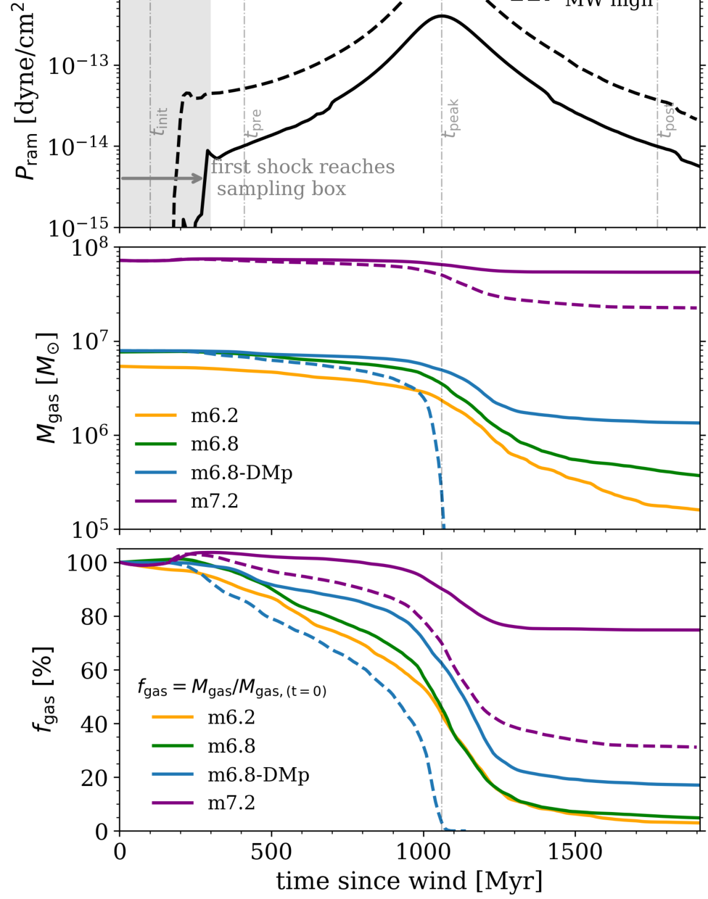
This figure follows the response of several dwarf models to ram pressure in a Milky
Way-like halo. The top panel shows how the imposed ram pressure varies along the orbit,
while the lower panels track the evolution of gas mass and gas fraction. What stands out
is the strong mass dependence: the lightest systems are stripped much more efficiently,
while the more massive models retain a substantial central reservoir.
Read together with GalactISM (2024),
Tango for Three (2020), and
Where Did All the Gas Go? (2018), this note fits well
with a broader theme already present on the page: global outcomes depend not only on the
surrounding environment, but also on which gas phase is being removed and on whether the
galaxy is massive enough to hold on to a dense central ISM.
This paper matters because it focuses on a question that is often answered too quickly in
galaxy-formation discussions: whether low star-formation rates in bulge-dominated systems
follow directly from morphology, or whether the bulge is only one part of a larger balance
involving gas supply, stability, heating, and feedback. The note is interesting because it
keeps the structural interpretation connected to the gas cycle instead of treating morphology
as a complete explanation by itself.
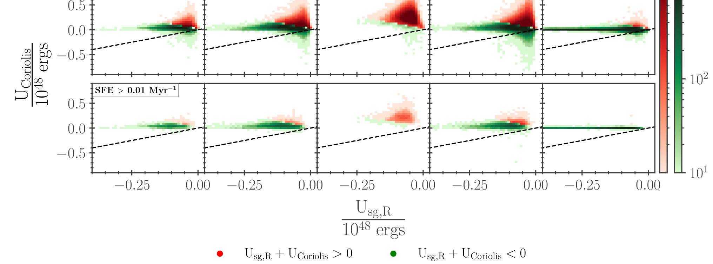
The figure tracks how star-formation activity changes with structural diagnostics linked to
bulge growth. The main point is that stronger central concentration correlates with lower
star-formation activity, but the relation is not perfectly one-dimensional, which suggests
that gas content and internal regulation still matter.
Read after GalactISM (2024) and in the longer feedback
context of Jahn et al. (2021), this note extends a recurring
pattern on the page: matching a quenched state is less informative than understanding which
physical cycle actually produced it.
This follow-up is valuable because it shifts the emphasis from halo morphology to the
chemical structure of galactic discs. The paper explores how disk bimodality can emerge in
systems that experience GSE-like mergers and strong early clump-driven star formation,
making the point that chemical sequences are tied to the broader assembly history rather
than to a single simple trigger. That is especially relevant for anyone interested in how
merger-driven heating and early enrichment can leave long-lived signatures in abundance space.
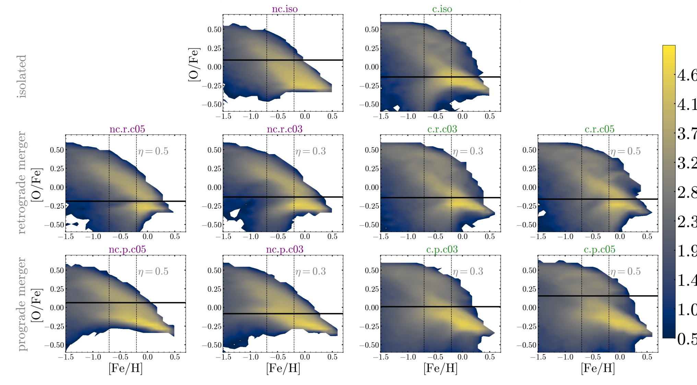
The figure compares how different formation histories populate chemical space in the disc.
The important visual point is that bimodality is not just a decorative feature of the
abundance plane: it is linked to when and how the galaxy experienced rapid early star
formation, clump evolution, and merger-driven restructuring.
Read after Stellar Halos with GSE Analogs (2024)
and GASTRO I (2022), this paper fits naturally with other
notes here that warn against one-to-one interpretations of integrated observables. In this
case, the warning applies to chemical structure: similar disc bimodalities can reflect a
more complicated early history than a single clean origin story.
This paper is important because it reframes the high-resolution galaxy simulation not merely
as a science run, but as a benchmark environment for testing ISM physics at scale. That idea
is especially attractive for anyone interested in subgrid development: before exporting a
model into large cosmological production runs, one wants a controlled setting in which the
phase structure, turbulence, cooling, and feedback loop can be inspected in detail.
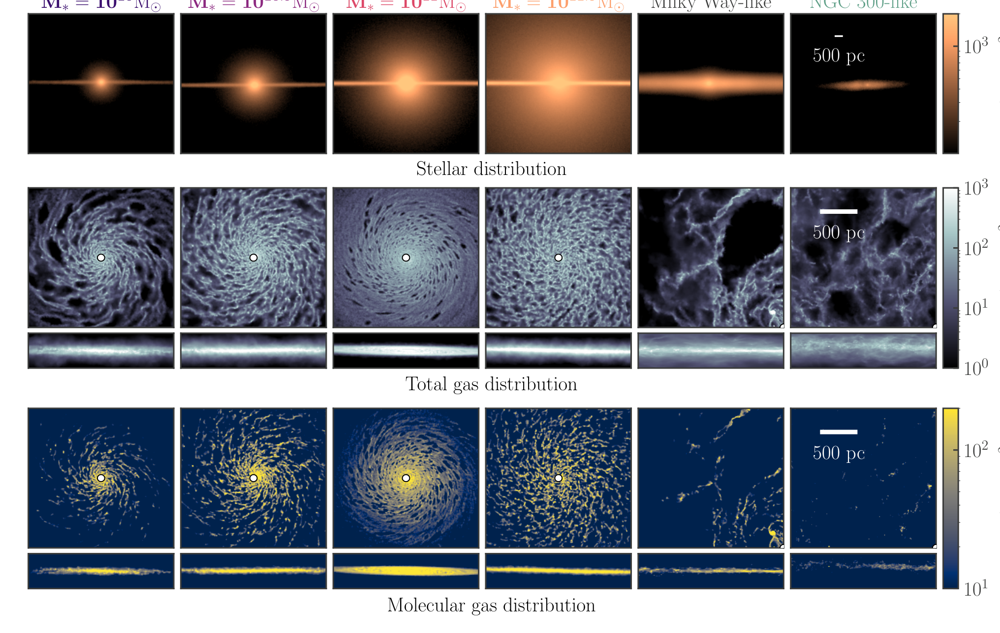
The figure shows the galaxy-wide benchmark in resolved multiphase form, with dense
star-forming regions embedded in a much broader turbulent and porous medium. That is
exactly why this setup is useful as a benchmark: local ISM structure and global disc
behaviour can be inspected within the same framework.
This paper is interesting because it explicitly asks how exceptional the Milky Way may be
in merger-history terms. By examining cosmological systems with more than one GSE-like
contributor, the authors test whether halo structure and debris morphology remain simple to
interpret once the assembly history becomes more crowded. The answer is useful precisely
because it complicates the naive picture rather than just reproducing it.
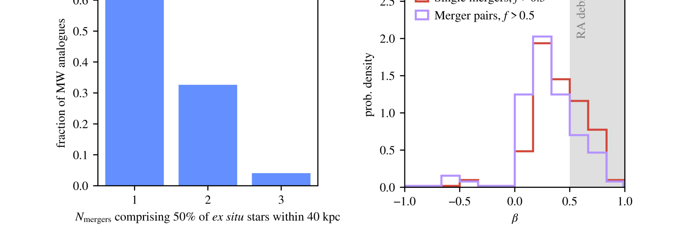
The figure compares halo structure in systems that host more than one GSE-like
contributor. What becomes clear is that overlapping merger debris can still produce a halo
with strong radial signatures while making the reconstruction of the underlying assembly
history much less straightforward.
Read together with GASTRO I (2022) and
Tango for Three (2020), this note extends a line of thought
already present on the page: halo observables are powerful, but they become most convincing
when morphology, kinematics, and assembly history are interpreted together.
This paper is especially useful because it shifts the feedback discussion from injection
recipes alone to the actual life cycle of superbubbles inside galaxies. Instead of asking
only whether clustered supernovae regulate star formation, the paper asks where
superbubbles form, how they grow, and how they populate the ISM. That makes it a strong
bridge between local feedback physics and galaxy-scale structure.
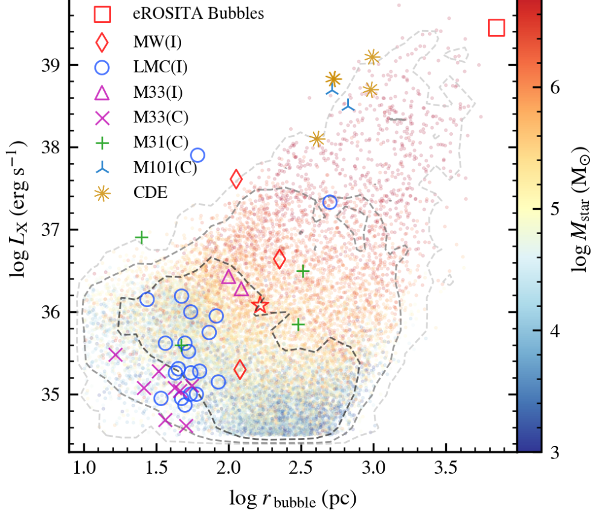
The figure maps how superbubbles populate the simulated galaxy and how their sizes or
locations are distributed. The visual message is that superbubbles are not rare
curiosities: they organize a substantial fraction of the hot, volume-filling medium and
therefore matter for the global disc structure.
This paper is particularly relevant because it moves the Sagittarius discussion from pure
structure into chemo-dynamical detail. By mapping chemical information across the stream
with Gaia, the authors show that Sagittarius debris retains informative internal structure
rather than behaving like a fully mixed stellar population. That is exactly the kind of
result that makes Sagittarius so useful as a bridge between resolved stellar populations and
dynamical reconstruction.
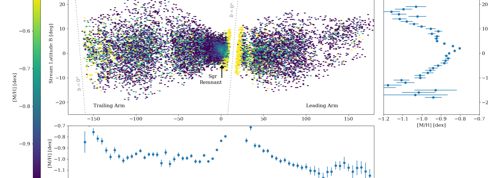
The figure shows how chemically selected Sagittarius stars are distributed across the
system. What the reader is seeing is not only a map, but evidence that the stream
preserves spatially organized chemical structure that can be used to reconstruct the
system's evolution.
This paper is useful because it treats Sagittarius debris not as an isolated stream problem,
but as part of a more crowded halo phase space. Extending the analysis down to the
extremely metal-poor regime matters because it complicates simple tagging arguments:
debris identification depends on how well one separates structures that were produced by
different accretion events but now occupy partly related regions of integrals-of-motion
space.
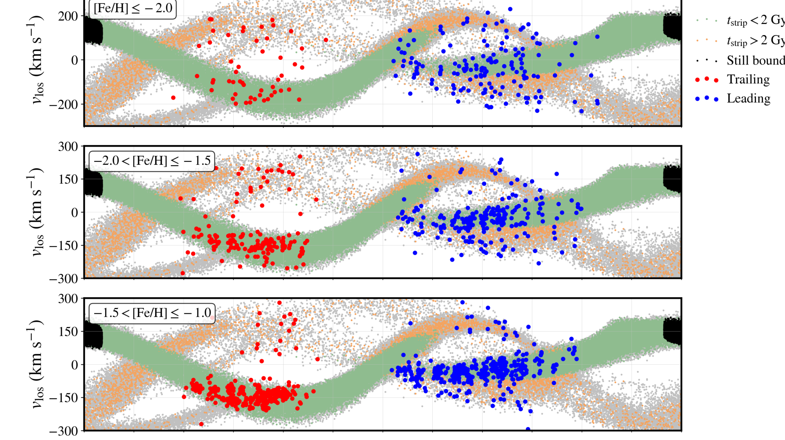
The figure places Sagittarius debris in phase-space coordinates while emphasizing its
internal chemical spread. The main thing to notice is that the structure is informative
but not trivially isolated, which is why the Sagittarius problem cannot be reduced to a
single clean selection box.
This paper is a strong reference for connecting merger history to present-day Galactic
structure in a cosmological setting. Rather than treating Gaia Sausage/Enceladus as a
single static fossil, the authors compare several GSE-like analogues and ask how broadly
similar mergers can still generate non-identical chemodynamical outcomes. That makes the
paper especially useful for anyone who wants to discuss analogues without pretending that
there is only one acceptable realization of a GSE-like event.
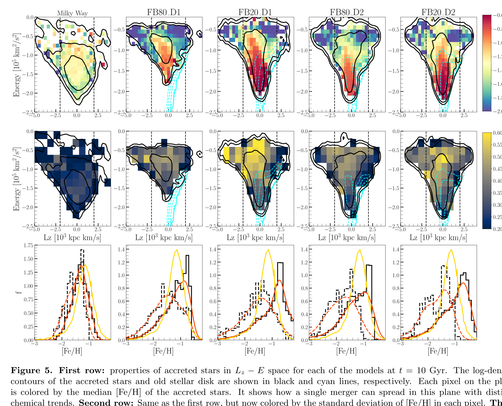
The figure compares Milky Way analogues with different GSE-like merger histories. The
reader is seeing how the same broad class of accretion event can leave measurable but not
perfectly identical signatures in halo structure and chemical distribution.
This is one of the clearest papers in this reading list for separating agreement in broad
galaxy-scale observables from fidelity to the actual baryonic cycle operating in the inner
halo. Using idealized dwarf-galaxy simulations with the moving-mesh code AREPO, the authors
show that the SMUGGLE model can generate dark-matter cores, whereas runs based on the older
Springel & Hernquist (2003) effective model remain
cuspy under the same initial conditions. The main value of the paper is that it does not
reduce the comparison to a simple “better versus worse” statement; instead, it asks which
physical ingredients are required for a bursty, time-variable baryonic cycle capable of
modifying the central potential.
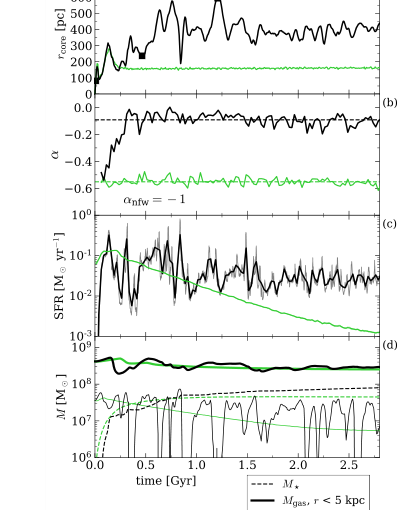
A representative diagnostic from Jahn et al. (2021), combining inner-slope evolution,
core-size indicators, and star-formation history to show why stellar tracers do not
provide a trivial one-to-one signature of cusp-core transformation.
Read after Marinacci et al. (2019),
Vogelsberger et al. (2013), and
SH03, this paper makes a methodological point that is highly
relevant for subgrid work: reproducing some integrated observables does not by itself
guarantee that the unresolved ISM and feedback cycle are being represented with the
physical detail required for questions such as halo-core formation.
GADGET-4 is best read as the modern public synthesis of the long GADGET lineage. The paper
is not only about performance or software engineering; it also consolidates developments in
gravity, adaptivity, time integration, parallelization, and hydrodynamics that emerged over
nearly two decades of community use. In that sense, it functions both as a code paper and
as a historical summary of how numerical priorities changed as simulations became larger and
physically more ambitious.
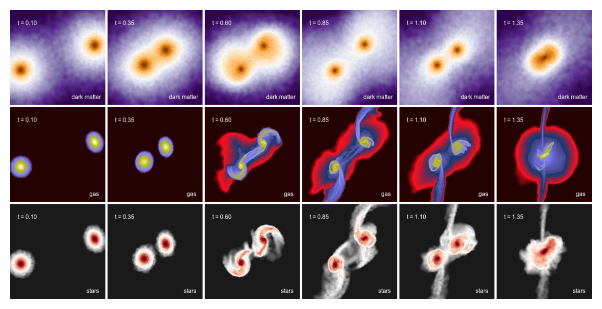
The Santa Barbara cluster benchmark is a meaningful figure to keep because it connects the
modern code to one of the classic community validation tests in computational cosmology.
In dialogue with Hopkins (2012),
GADGET-2 (2005), and
GADGET (2001), the paper is especially interesting because
it preserves continuity with the traditional SPH lineage while also absorbing lessons from
later critiques of mixing and contact discontinuities. For anyone working with public
simulation codes, GADGET-4 is therefore important both technically and conceptually.
This paper is compelling because it rejects the habit of modelling the Milky Way,
Sagittarius, and the LMC in pairwise isolation. The main point is dynamical, but its
implications are broader: once several massive perturbers act together, debris geometry,
orbital backtracking, and even the interpretation of present-day asymmetries become less
clean than in simple two-body narratives.
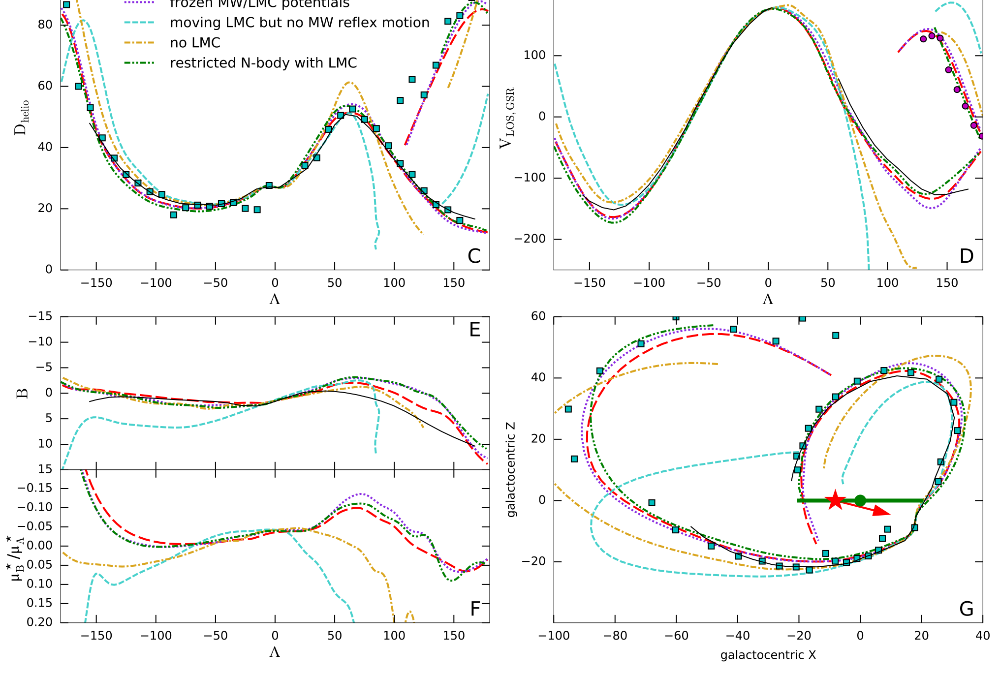
The figure summarizes the three-body interaction geometry between the Milky Way,
Sagittarius, and the LMC. What it makes clear is that the satellites do not perturb the
Galaxy independently; their effects overlap in time and reshape each other's orbital
imprint.
This paper matters less because it introduces a new physical ingredient and more because it
turns an influential numerical framework into a documented public platform. AREPO had
already become central to methodological discussions after the original moving-mesh paper,
but the public release changes the status of the method from a reference in the literature
to a tool that can actually be adopted, tested, compared, and extended by a wider community.
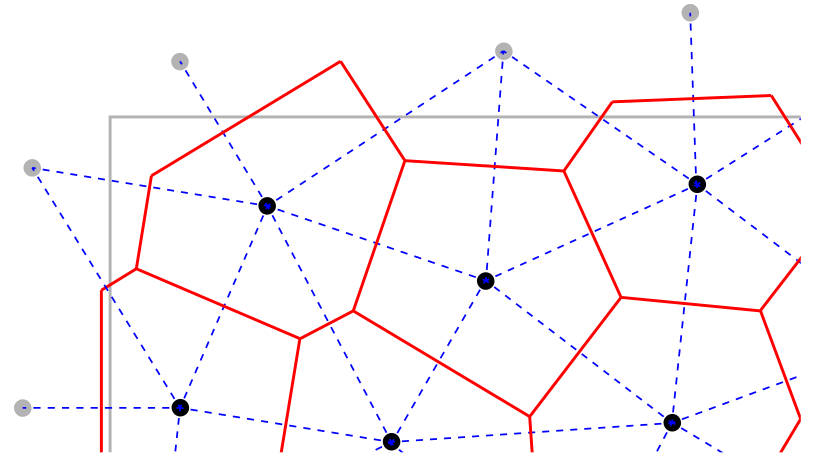
The key idea behind AREPO is the use of a moving mesh, in which the domain is discretized
into Voronoi cells and evolved with a finite-volume Godunov scheme. This lets the method
combine strengths usually associated with Eulerian shock-capturing and Lagrangian
adaptivity.
Read after Marinacci et al. (2019),
Vogelsberger et al. (2013), and
AREPO (2009), this paper marks the maturation
of the moving-mesh program from numerical proposal to public research infrastructure. It is
also an important counterpoint to the public GADGET lineage represented by
GADGET-2.
This paper is especially useful because it separates two questions that are often mixed
together in discussions of subgrid models. The first is whether a model reproduces broad
integrated observables such as stellar-mass growth and the global star-formation history.
The second is whether it generates an interstellar medium whose structure, phase
distribution, and feedback cycle look physically plausible. Marinacci et al. show clearly
that these two issues are related, but not equivalent.
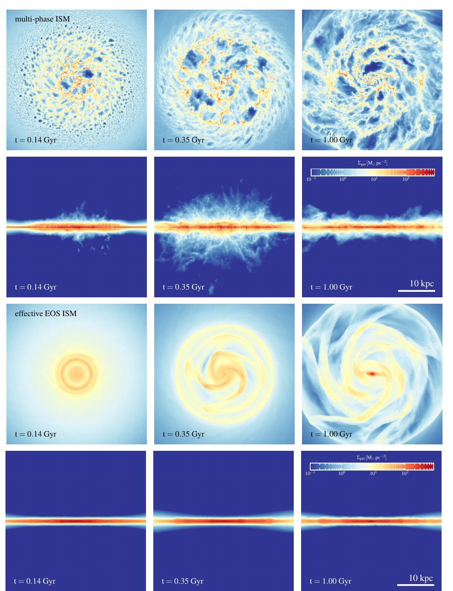
One of the most informative comparisons in the paper: the explicit-feedback model
produces a far more structured and vertically extended ISM than the SH03 run, with
cavities, fountains, and a much less artificially smooth gas distribution.
Read after Vogelsberger et al. (2013),
Hopkins (2012),
Dalla Vecchia & Schaye (2012),
AREPO (2009), and
SH03, this paper becomes a particularly strong reference for
the distinction between effective regulation and realistic ISM structure. A galaxy may
evolve reasonably at the integrated level while still representing the unresolved gas cycle
in a very different physical manner.
This paper is especially valuable because it does not judge feedback only by its ability to
suppress the star-formation rate. Instead, it asks what the feedback prescription does to
the thermo-chemical state of the dense ISM, especially to the molecular phase. That is the
correct question when the goal is not only regulation, but also a physically interpretable
connection between feedback, cooling, and H2 chemistry.
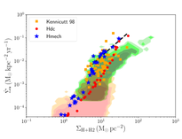
A compact summary of the paper’s main trade-off: different feedback models can regulate
the galaxy differently, but they also leave distinct signatures in the molecular-gas
content and depletion times.
Read after Keller et al. (2014),
Dalla Vecchia & Schaye (2012), and
Stinson et al. (2006), this paper is a strong reminder
that “good global regulation” is not sufficient by itself. A feedback model may produce
acceptable integrated behaviour while distorting the cold molecular phase in ways that are
hard to interpret physically.
This paper is especially relevant because it asks a simple but physically important
question about Sagittarius: if the system was once more gas rich, where did that gas
actually go? By focusing on gas stripping and its fate in the Galactic environment, the
paper turns the Sagittarius problem from a purely stellar-dynamical story into one that
also involves the circumgalactic and disc gas cycle.
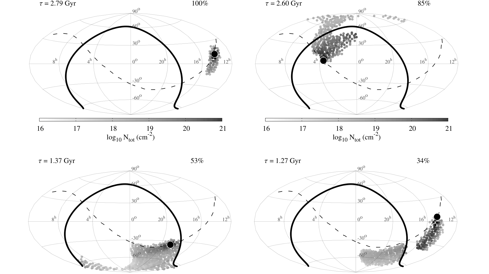
The figure shows the displaced gas associated with Sagittarius as it is stripped and
redistributed during the interaction. The reader is seeing why the absence of present-day
gas does not imply a simple disappearance: the material is dynamically reprocessed by the
encounter.
Read after The Influence of Sagittarius and the LMC on the
Milky Way (2017), this note adds the baryonic side of a problem that is often discussed
only in terms of orbits and stellar debris. It also pairs naturally with the ISM-focused
notes elsewhere on the page by reminding us that gas history is often central to
interpreting the final system.
This paper is a useful reminder that the present-day Milky Way cannot be interpreted as a
purely self-evolved disc. By modelling the joint perturbations induced by Sagittarius and
the LMC, the authors show that warps, asymmetries, and phase-space structure may carry the
imprint of multiple satellites acting on different timescales.
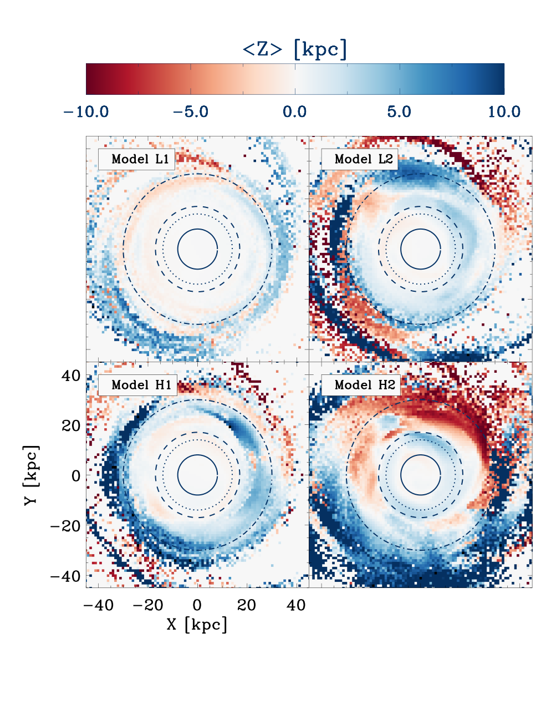
The figure shows the Milky Way response to repeated satellite perturbations, highlighting
distortions in the disc and halo. What the reader is seeing is the cumulative dynamical
wake of the interaction rather than a single clean tidal feature.
Read after Athanassoula et al. (2011) and
GADGET-2 (2005), this note sits slightly apart from the
subgrid sequence but still fits the page well, because it shows how much of Galactic
structure depends on the live dynamical setting in which later chemo-dynamical
interpretation has to operate.
Gasoline2 is interesting because it shows what an SPH code looks like after the major
methodological critiques of the previous decade have been taken seriously. The paper
incorporates improved kernels, diffusion terms, timestep handling, and force accuracy in a
way that makes it an important representative of the post-classic SPH generation.
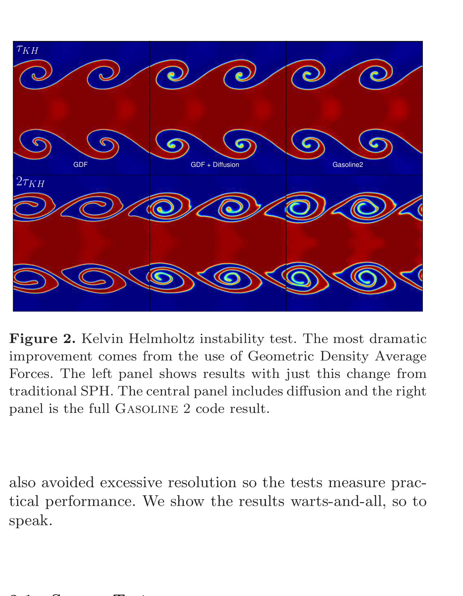
The figure presents one of the code-validation tests used to show the improved SPH
behaviour of Gasoline2. The reader should notice the cleaner treatment of fluid structure
and mixing relative to what older SPH formulations often struggled to reproduce.
Read after Hopkins (2012),
GADGET-2 (2005), and
GADGET (2001), this note complements the solver history
already on the page by showing that the response to SPH criticisms was not only the rise of
moving-mesh methods, but also a substantial redesign within the SPH family itself.
This paper is valuable because it is much less triumphalist than many feedback papers.
Rather than presenting one prescription as universally sufficient, it asks how far
supernova feedback alone can realistically go in regulating a Milky Way-like system. That
framing matters because it turns the discussion from model tuning toward the physical scope
and limits of the mechanism itself.
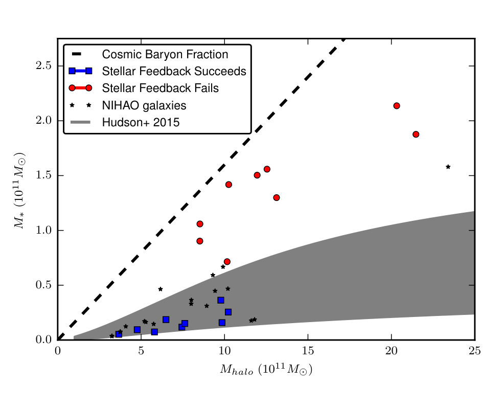
The figure compares galaxy outcomes obtained under different supernova-feedback
assumptions. What the reader sees is that changing the implementation shifts morphology
and regulation noticeably, but does not automatically solve every problem, which is
exactly the paper's main caution.
This paper is attractive because it asks whether a cosmological simulation can produce more
realistic galaxies without relying on arbitrarily extreme feedback. The main point is not
that feedback should simply be stronger, but that the hot phase generated by clustered
supernovae needs to retain enough physical meaning to regulate the system efficiently at
the galaxy scale. In that sense, the paper is a bridge between the superbubble idea and its
cosmological application.
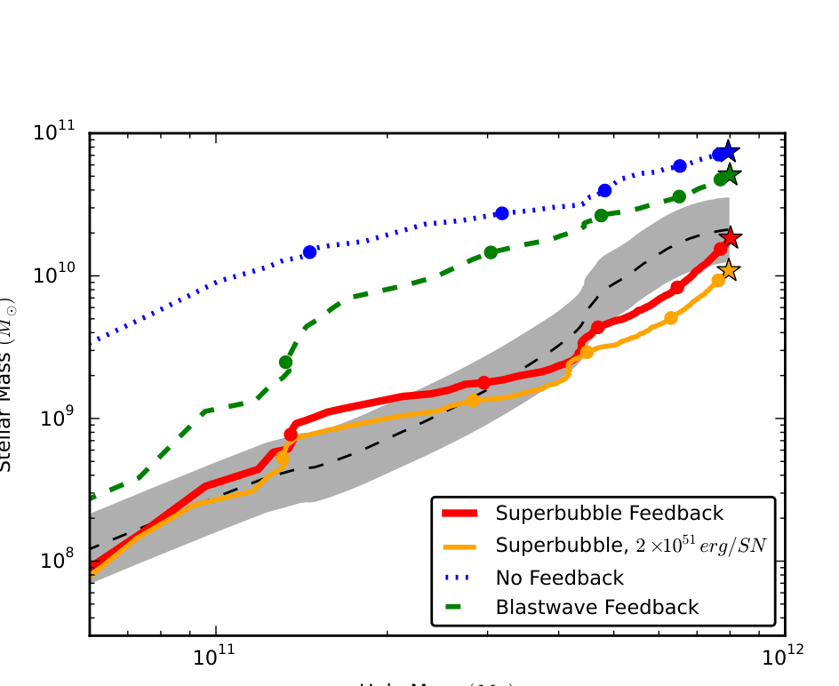
The figure compares galaxy structure obtained in cosmological runs with superbubble
feedback. The important point is that the disc can remain comparatively realistic without
requiring feedback to be represented only as an increasingly aggressive effective energy
injection.
EAGLE is a major reference point because it presents a full galaxy-formation framework that
is explicit about calibration, large-scale observables, and the practical role of subgrid
choices in cosmological simulations. The paper is especially helpful when read alongside
other model-building notes here because it is not trying to resolve the full ISM directly;
instead, it asks how far one can go with a carefully constructed effective framework tied
to observational constraints.
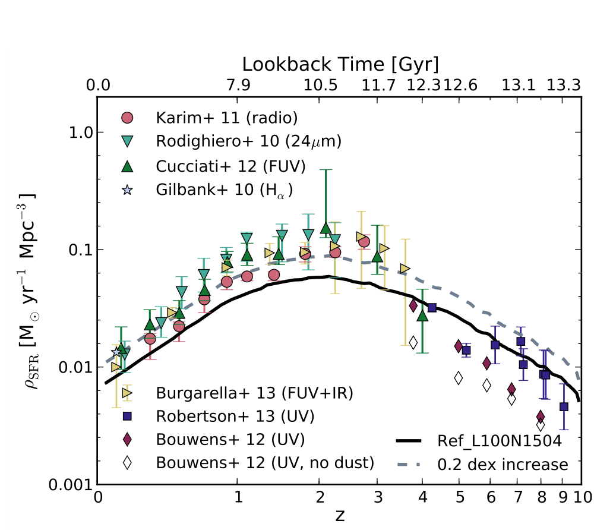
The figure compares EAGLE galaxies with key observational relations. What the reader
should notice is that the agreement is assessed at the population level, which is why
this paper became so influential in discussions of calibrated cosmological subgrid models.
Read after Vogelsberger et al. (2013),
Dalla Vecchia & Schaye (2012), and
SH03, this note provides a useful counterpoint to the more
ISM-explicit papers elsewhere on the page: it shows how effective models can still be
extremely successful when the scientific target is the galaxy population rather than the
resolved multiphase cycle itself.
Keller et al. push the feedback discussion beyond isolated supernova events and toward
clustered stellar feedback, emphasizing that unresolved feedback regions should not be
treated as single-phase parcels. The superbubble model is attractive because it tries to
preserve the hot interior and the evaporation of colder material into that bubble, rather
than relying on a purely artificial cooling switch.
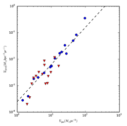
A representative diagnostic from Keller et al. (2014): the superbubble model is not only
morphologically appealing, but also moves the simulated disc toward a more realistic
star-formation law.
Read after Dalla Vecchia & Schaye (2012),
Stinson et al. (2006), and
SH03, this paper is best understood as a phase-structure
paper. Its main point is that the unresolved hot bubble should retain physical meaning,
because that hot phase is central to how feedback vents out of the disc and regulates star
formation.
Vogelsberger et al. present a galaxy-formation model built for cosmological simulations
with a modern hydrodynamical solver, combining radiative cooling, enrichment, stellar
feedback, black-hole growth, and AGN feedback in a unified framework. What makes the paper
especially useful is that it does not present the model only as a technical recipe; it
evaluates the resulting galaxy population against a broad suite of observables.
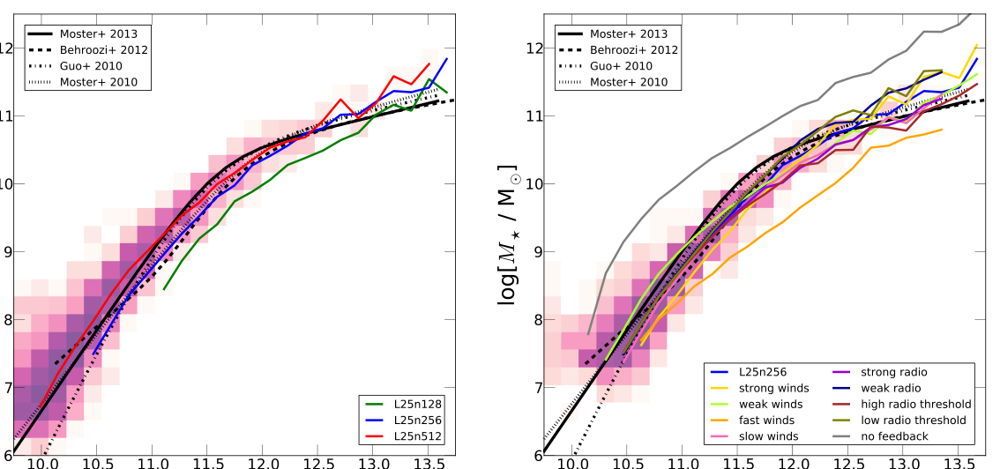
One of the key validation figures in the paper: the stellar-mass–halo-mass relation
changes substantially once the full feedback model is activated, showing why this work
became so important for the later Illustris lineage.
Read after AREPO (2009),
GADGET-2 (2005), and
SH03, this paper illustrates a broader shift in the field:
from effective star-formation regulation alone toward larger, more modular galaxy-formation
frameworks calibrated against several observables at once.
This paper is one of the key responses to the criticism that traditional SPH formulations
have difficulty with fluid mixing, contact discontinuities, and some instability problems.
Rather than abandoning SPH, Hopkins derives a broader Lagrangian framework that preserves
conservation while improving the treatment of interfaces. It is therefore important not only
for the results it produces, but also for the way it reconstructs the equations themselves.
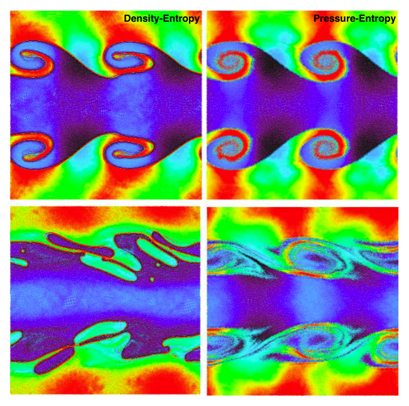
A representative Kelvin–Helmholtz comparison, included because it directly visualizes the
mixing problem that motivated pressure-entropy SPH.
Read after AREPO (2009) and
GADGET-2 (2005), this paper is best seen as a
methodological answer to the growing realization that some apparent “physical” differences
between galaxy simulations could in fact originate in the hydrodynamical formulation
itself. Together with the moving-mesh literature, it helped clarify that solver design is
part of the physics interpretation problem, not something fully separable from it.
This is one of the cleanest papers in the feedback literature because it identifies the
numerical problem with unusual precision. Thermal feedback often fails not because thermal
energy is intrinsically unphysical, but because the injected energy is spread over too much
mass. The resulting temperature jump is too small, the cooling time is too short, and the
feedback energy is radiated away before it can do dynamical work.
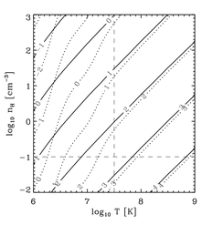
The conceptual core of the paper: the comparison between sound-crossing and cooling times
shows when thermal feedback can convert injected energy into motion instead of losing it
immediately to radiation.
Read after GADGET-2 (2005) and
SH03, this paper remains a foundational reference for
making thermal feedback numerically viable without turning cooling off by hand. Even when
one prefers mechanical or multiphase approaches, it is still essential for understanding
why naive thermal injection so often fails.
Comparisons of Different Codes for Galactic N-body Simulations
Athanassoula et al. 2011, A&A, 531, A120
Although this paper is focused on gravity solvers and pure N-body applications rather than
baryonic subgrid physics, it is very useful for placing widely used astrophysical codes in
a broader numerical ecosystem. The comparison is valuable precisely because it asks not only
whether different methods can run, but how they differ in memory use, timing, scaling, and
dynamical accuracy for the same class of problems.
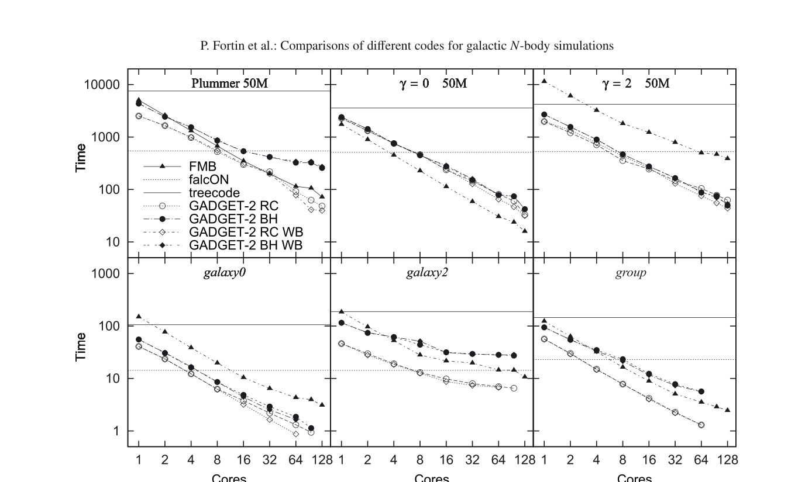
A representative code-comparison diagnostic, emphasizing that different numerical
architectures should be compared through force and phase-space behaviour, not only by
visual morphology.
Read after GADGET-2 (2005) and
GADGET (2001), this paper reinforces an important
practical point: before comparing subgrid physics, one often has to ask whether the
underlying code architecture is well suited to the scientific problem in the first place.
October 2009
E pur si muove: Galilean-invariant Cosmological Hydrodynamical Simulations on a Moving Mesh
This paper is one of the major turning points in computational hydrodynamics for
astrophysics. Springel proposes a moving-mesh finite-volume method based on a Voronoi
tessellation and a Godunov scheme, with the explicit goal of combining the adaptivity of
Lagrangian methods with the shock-capturing strengths of Eulerian approaches. The paper is
motivated by limitations that had become increasingly visible in both traditional SPH and
fixed-grid methods.
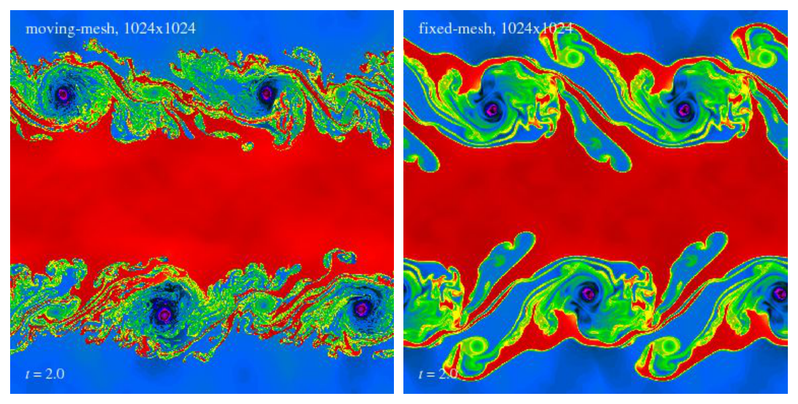
The classic Kelvin–Helmholtz comparison from the original AREPO paper, still one of the
clearest visual demonstrations of why moving-mesh methods attracted so much attention.
Read after GADGET-2 (2005) and
SH03, this paper is important because it changes the solver
itself, and therefore changes the context in which later discussions of galaxy formation and
subgrid realism must be interpreted.
This paper is a classic because it helped define the blastwave-feedback style that became
highly influential in SPH galaxy simulations. The preferred model does not merely inject
stronger feedback in an arbitrary sense; it temporarily suppresses cooling inside the
unresolved remnant, motivated by Sedov–Taylor and snowplow evolution, so that the feedback
remains dynamically important for long enough to alter the disc.
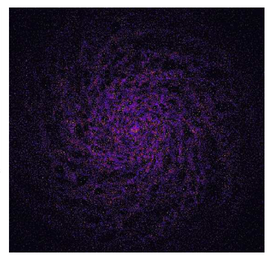
A representative morphology comparison showing the practical impact of the blastwave
model: the disc becomes more structured, turbulent, and vertically extended than in weaker
local-feedback runs.
Read after GADGET-2 (2005) and
SH03, this paper is best understood as a historically
successful workaround for unresolved remnant evolution. Later work would question the
physical cost of the imposed cooling shutoff, but this paper remains fundamental for
understanding why that family of models became so widely used.
GADGET-2 marks the consolidation of the GADGET family into one of the most widely used
public codes in cosmological simulation work. The paper presents a massively parallel
TreeSPH code with adaptive time-stepping, TreePM gravity, and an entropy-conserving SPH
formulation. Beyond performance, what made the code so influential is that it provided a
scalable public framework that could host a very broad range of physical modules.
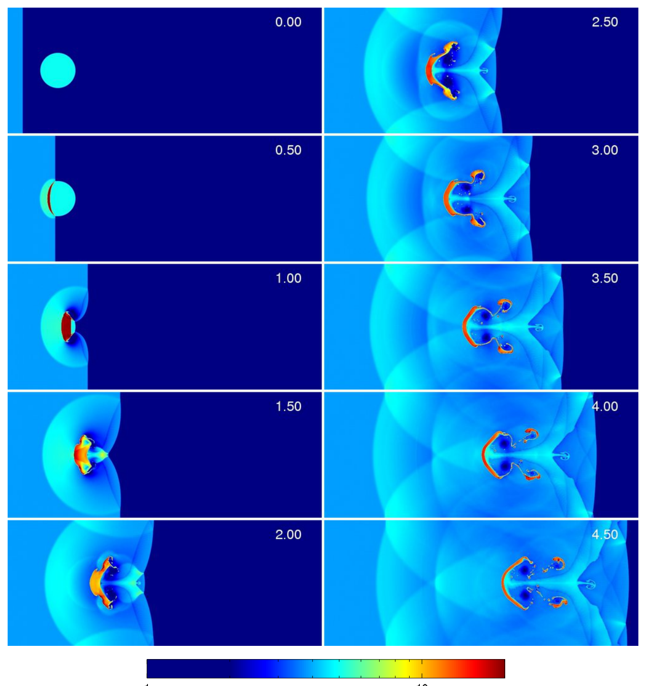
A representative hydrodynamic test from GADGET-2, useful because it shows that the code’s
importance went well beyond gravity-only cosmological applications.
Read after SH03 and
GADGET (2001), this paper can be seen as the point where a
promising numerical platform became the standard technical home for a large fraction of
later galaxy-formation modeling.
Springel and Hernquist introduce one of the most influential effective models for the
unresolved interstellar medium in cosmological simulations. Star-forming gas is treated as
a hybrid multiphase medium in which cold clouds, hot ambient gas, cooling, supernova
heating, evaporation, enrichment, and winds are coupled through a subgrid equilibrium
framework. Its importance lies in providing a practical way to model star formation and
feedback when the true small-scale ISM structure is far below the numerical resolution.
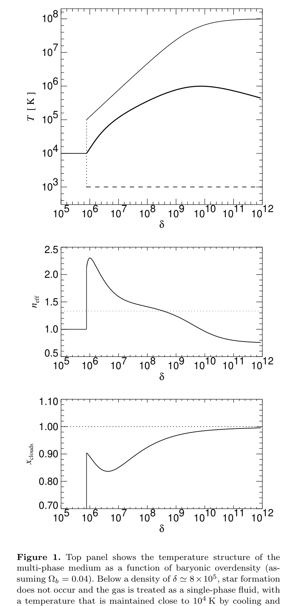
The effective multiphase construction at the heart of SH03: above the density threshold,
unresolved star-forming gas is replaced by a pressurized equilibrium model coupled to a
star-formation law.
Built on the computational framework established by GADGET
(2001), SH03 became foundational because it showed how an effective ISM model could
deliver self-regulated star formation in large cosmological runs. It is exactly this
success, however, that later made it such an important target of critique in notes
concerned with burstiness, multiphase structure, and feedback realism.
This is the natural starting point of the sequence. Springel, Yoshida, and White present
GADGET as a public Tree+SPH code designed for cosmological structure formation and
interacting galaxies, combining collisionless N-body dynamics and gas hydrodynamics in a
massively parallel framework. The emphasis on adaptive timesteps, dynamic range, and public
release was historically important because it helped define what a modern community code in
computational cosmology could look like.
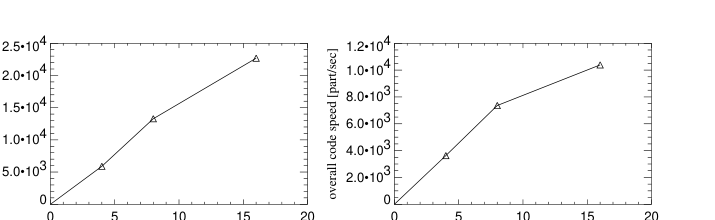
A representative scaling result from the first GADGET paper, included because parallel
performance was already a central design concern in the code’s earliest public
formulation.
In retrospect, this paper is valuable not only for its algorithms, but because it
establishes the platform on top of which much of the later story unfolds. In that sense,
GADGET (2001) is less a final answer than the opening chapter of a long numerical lineage
in galaxy-formation simulations.